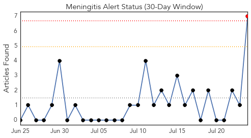
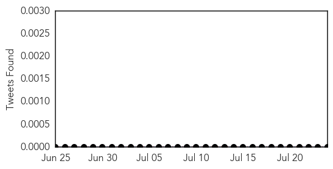
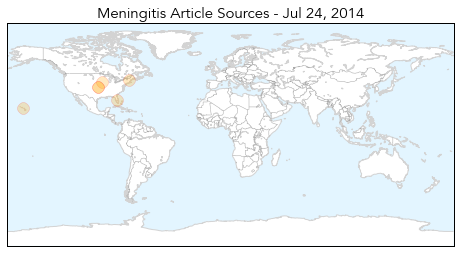
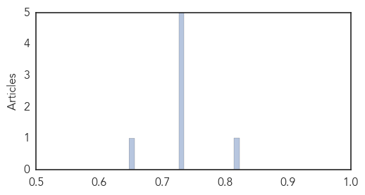

Meningitis
30-Day Web Trend
1 alerts, 0 warnings

30-Day Twitter Trend
0 alerts, 0 warnings

Article Locations
Article Confidences
Top Articles:
- 0.823
- NHRC asks for report on AES
- 0.732
- U.S. Teens Still Lag In Getting Vaccinated Against HPV
- 0.729
- U.S. Teens Still Lag In Getting Vaccinated Against HPV
- 0.729
- U.S. Teens Still Lag In Getting Vaccinated Against HPV
- 0.729
- U.S. Teens Still Lag In Getting Vaccinated Against HPV
- 0.729
- U.S. Teens Still Lag In Getting Vaccinated Against HPV
- 0.648
- U.S. Teens Still Lag In Getting Vaccinated Against HPV : Shots
Top Tweets:
-
No tweets found for Jul 24, 2014
Hepatitis
30-Day Web Trend
3 alerts, 0 warnings

30-Day Twitter Trend
0 alerts, 0 warnings

Article Locations

Article Confidences

Top Articles:
- 0.829
- Hepatits A & E spreading through drinking water
- 0.672
- Miriam Hospital physician advocates awareness, collaboration to combat peaking hep C virus
- 0.629
- Congratulations! Inoculations!
- 0.604
- Miriam Hospital physician advocates awareness, collaboration to combat peaking hep C virus
- 0.505
- WHO Welcomes Global Momentum on Viral Hepatitis
- 0.501
- Costly hepatitis C cure is dilemma for doctors
Top Tweets:
-
No tweets found for Jul 24, 2014